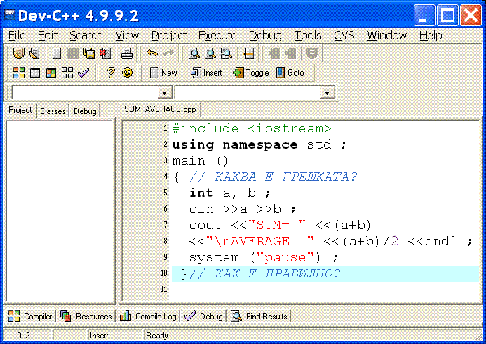

Базови Типове Данни
Кирил Иларионов
k.ilarionov at gmail.com
Тип на данните (I)
- Информацията (данните) се съхраняват в компютъра като поредица от 0 и 1. За хората не е обичайно да работят с 0 и 1 само. Хората ползват информацията във вид на числа, букви, символи, ... Езикът за програмиране осигурява представяне на данните в обичаен за повечето хора вид.
- Такова обичаино представяне се осигурява чрез вградените в езика базови (примитивни) типове данни.
Тип на данните (II)
- Типът на данните определя:
- правилата по които да се пребразува поредицата от 0 и 1 ;
- Типът задава стандартна дължина на поредицата от 0 и 1 (размерът в БАЙТОВЕ), а от там и точността с която се работи;
- Размерът на ОП отделена за избран тип данни в C/C++ зависи от типа на процесора на които ще се изпълнява програмата;
-
операциите които е "естествено" да се извършват с данни от този тип.
Примитивни типове данни (I)
- са предварително дефинирани (вградени) в езика за програмиране;
- не се дефинират от програмиста;
- стандартни са, в смисъл че са предварително предоставени и практически винаги се използват.
Примитивни типове данни (II)
- Примитивните типове данни
- Примитивни (базови) типове в C/C++
- символен тип
char ;
- логически (булев) тип
bool ;
- числови типове за:
- цели числа,
int ;
- числа с десетична точка (с плаваща запетая, мантиса и порядък),
double или float .
Data Type Size
Функцията sizeof дава възможност
да се провери размера
примерно за типа int за Вашия конкретен процесор.
За целта въведете, компилирайте и изпълнете следната програма:
Data Type Size (II)
/* sizeofBaseTypes.cpp
Name: ILARIONOV, Fac. Num. 55331, 16-Aug-2010
--------
The programm checks and prints the sizes of C/C++ base types
related to current PC architecture. */
#include <iostream>
using namespace std ;
main ()
{
cout <<"The size of type char\t is\t" <<sizeof(char) <<" Byte/s\n" ;
cout <<"The size of type bool\t is\t" <<sizeof(bool) <<" Byte/s\n" ;
cout <<"The size of type int\t is\t" <<sizeof(int) <<" Byte/s\n" ;
cout <<"The size of type float\t is\t" <<sizeof(float) <<" Byte/s\n" ;
cout <<"The size of type double\t is\t"<<sizeof(double) <<" Byte/s\n" ;
} // main () ends here.
Изход
Data Properties
- Данните в програмата отразяват свойства на обектите от реалния свят, който са съществени за задачата решавана от програмата.
- Тези свойства могат да се променят или не, т.е. данните биват:
- ПРОМЕНЛИВИ - информацията може да се изменя;
- КОНСТАНТИ - информацията е с постоянен характер.
- И в двата случая даните ни си имат тип.
Деклариране на променливи (I)
- Всяка променлива трябва задължително да се декларира. При декларирането се указва:
- ТИП на променлива ;
- ИМЕ на променлива:
- Името на променлива е от латински букви, цифри и/или знак за подчертаване, като не започва с цифра ;
- Има значение дали буквата е главна или малка буква ;
Деклариране на променливи (II)
ПРЕПОРЪЧИТЕЛНО Е:
- името на променливата да е свързано с използването й;
- името да започва с малка буква;
- ако името е от няколко думи, то думите без първата да започват с главна буква;
- при декларирането на променливите
да се зададе началната й стойност. В този случай казваме че променливата се инициализира.
Деклариране на променливи (III)
const записана в началото на декларацията, указва че:
- не можем да променяме стойностите на декларираните променливи;
- можем само да прочетем стойностите им;
- Такава декларация е препоръчителна, ако алгоритъмът позволява това.
Примерни декларации (I)
bool passExam ;
- Декларирана е променлива от логически тип с име
passExam ;
int a, b = 5 ;
- Декларирани са две целочислени променливи с имена
a и b,
като за променливата b е зададена начална стойност 5 ;
Примерни декларации (II)
const float minHourly = 15.63,
minMonthly = 450 ;
-
Декларирани са две променливи от тип
float с имена minHourly и minMonthly,
като като и двете променливи са инициализирани, съответно с 15.63 и 450. Стойностите на тези променливи не могат да се променят при изпълнението на програмата ;
НЕПРАВИЛНИ декларации (I)
int sreden uspeh ;- Името на променливата не може да включва интервал;
- ПРЕПОРЪЧИТЕЛНО Е:
int sredenUspeh ;
- Може да декларираме:
int sredenUspeh, sredenuspeh ;
sredenUspeh и sredenuspeh са две различни имена на две различни променливи.
НЕПРАВИЛНИ декларирации (II)
bool 1stfriend ;- СГРЕШЕН запис. Името на променливата не може да започва с цифра;
- ПРЕПОРЪЧИТЕЛНО Е:
bool frstFriend ;
- Често при съкращенията се изпускат гласните букви.
НЕПРАВИЛНИ декларации (III)
float min-cena ;
- СГРЕШЕН запис. В името на променливата не може да има тире;
Изход
ЦЕЛОЧИСЛЕНИ Променливи (I)
int listOfSomeMyVars ;
- С горната ключова дума
int се декларират една или няколко целочислени променливи, като имената на променливите в списъка се отделят чрез запетая;
int a, b, c ;
Декларирали сме три променливи с имена a, b и c;
И трите променливи са от тип int, т.е. стойностите на тези променливи са цели числа;
Началната стойност на променливите може да е произволно цяло число.
ЦЕЛОЧИСЛЕНИ Променливи (II)
С ключовата дума
int се декларират променливи, чиито стойности са цели числа.
Пред
int може да се изпише
short,
long или
unsigned.
short за къса целочислена променлива;long за целочислена променлива с повишена точност ;unsigned целочислена променлива с повишена точност без знак. Битът не се използва за знак, а за изчисляване стойността на променливата. Стойността на такива променлива е не-отрицателна винаги.
Това е начин да използваме цели числа с толкова значещи цифри, колкото са ни необходими за решаването на конкретната задача.
ЦЕЛОЧИСЛЕНИ Променливи (III)
Ключовата дума int често се изпуска, можем да пишем само:
short listOfSomeMyVars ;
- къси целочислени променливи, т.е. по-малко памет се отделя и от там точността е по-малка;
long listOfSomeMyVars ;
- дълги целочислени променливи с повишена точност, т.е. с повече значещи цифри;
ЦЕЛОЧИСЛЕНИ Променливи (IV)
unsigned int listOfSomeMyVars ;
- целочислена променлива без знак, т.е. само неотрицателни стойностти
, тъй като знаковия бит не указва знак, а се използва към стойността на променливата;
unsigned short int listOfSomeMyVars ;
- къса целочислена променлива без знак;
unsigned long int listOfSomeMyVars ;
- целочислена променлива с повишена точност без знак.
ЦЕЛОЧИСЛЕНИ Променливи - ПРИМЕР
/* intVarsEx1.cpp
Name: ILARIONOV, Fac. Num. 55331, 22-Aug-2010
--- That is an example 1 about type int.
The example shows how to declare, to initialize and
how to do some base calculations. */
#include <iostream>
using namespace std ;
main ()
{ int a=7, b=2 ; // Declares two int variables and initializes them.
cout <<"\n\ta=" <<a <<"\tb=" <<b ; // Отпечатва a и b
cout <<"\n\na+b=" <<(a+b) ; // СЪБИРАНЕ
cout <<"\n\na-b=" <<(a-b) ; // ИЗВАЖДАНЕ
cout <<"\n\na*b=" <<(a*b) ; // УМНОЖЕНИЕ
cout <<"\n\na%b=" <<(a%b) ; // ОСТАТЪК при Деление на ЦЕЛИ числа
cout <<"\n\na/b=" <<(a/b) ; // ЦЕЛОЧИСЛЕНО Деление - ЧАСТНО
cout <<"\n\n\t-b=" <<(-b) <<"\t- -b="<<(- -b); // Промяна на знак
cout <<"\n\n\t+b=" <<(+b) <<"\t+ -b="<<(+ -b); // Просто ЗНАКА +
} // ends main()
ЦЕЛОЧИСЛЕНИ Константи
Целите числа могат да се използват от програмата чрез целочислени променливи, както се убедихме от предишния пример.
Когато числата не се променят можем можем просто да изпишем стойностите им.
В този случай казваме че работим с литерално зададени константи.
В примера вече използвахме константите 7 и 2 при инициализирането на променливите
a и b съответно.
ЦЕЛОЧИСЛЕНИ Константи (II)
- Целите числа могат да се записват в десетична, осмична или шестнадесетична бройна система:
- десетичен запис
- поредица от десетични цифри. Примери:
10 -6 4
- осмичен запис
- поредица от осмични цифри започваща с 0. Примери:
012 -06 04
- шестнадесетичен запис
- поредица от шестнадесетични цифри започваща с 0x или с 0X. Примери:
0xA -0x6 0x4
ЦЕЛОЧИСЛЕНИ Константи (III)
Целочислените константи се представят като тип int. Представянето им може да се прецизира като:
long поредицата от цифри завършва с L или с l ;unsigned поредицата от цифри завършва с U или с u ;- няма целочислени константи представени като
short .
ЦЕЛОЧИСЛЕНИ Константи - Примери
10L
- числото 10 записано като
long int
012LU
- осмичен запис на числото 10 записано като
unsigned long int
0x10L
- шестнадесетичен запис на числото 16 от тип
long int
0286
Изход
Аритметични операции с цели числа
Видове:
- УНАРНИ Операции
- МУТИПЛИКАТИВНИ Операции
- АДИТИВНИ Операции
Аритметични операции с цели числа
УНАРНИ Операции:
-
+ положителен знак
-
- отрицателен знак
-
++ увеличаване с 1, инкрементиране на променлива
-
-- намаляване с 1, декрементиране на променлива
Аритметични операции с цели числа (II)
МУТИПЛИКАТИВНИ Операции:
-
* УМНОЖЕНИЕ
-
/ ЦЕЛОЧИСЛЕНО Деление - цяло ЧАСТНО
-
% ОСТАТЪК от делението на две цели числа
Аритметични операции с цели числа (III)
АДИТИВНИ Операции:
-
+ действие СЪБИРАНЕ
-
- действие ИЗВАЖДАНЕ
Изход
АРИТМЕТИЧНИ Изрази
- С помощта на аритметичните операции променливите и константите образуват аритметични изрази.
- Стойността на аритметичния израз e число което има тип чрез който се представя в компютъра.
- Типът на резултата от аритметичния израз
-
е такъв че да няма загуба на точност при смятането с различни по тип (точност) числа.
- се определя автоматично от компилатора, като аргументът с по-малка точност
неявно се преобразуват към типа на аргумента с по-голяма точност.
АРИТМЕТИЧНИ Изрази - ПРЕСМЯТАНЕ
- пресмята се стойността на изразите заградени в скоби. Скобите могат да се влагат;
- извършват се знаковите операции;
- променливите се инкрементират/декрементират ако операцията е записана преди името на променливата, префиксна операция;
- от ляво на дясно в реда в които са записани се извършват:
първо всички мултипликативни операции а след това всички адитивни операции.
- променливите се инкрементират/декрементират ако операцията е записана след името на променливата, постфиксна операция;
Аритметични изрази - Примери (I)
В програмата е декларирано:
int a=6, c=4, d=5 ;
Пресметнете изразите:
a+c*d
- c*d = 4*5 = 20
- a+c*d = a+20 = 6+20 = 26
- Изразът има стоиност 26
(a+c)*d
- a+c = 6+4 = 10
- (a+c)*d = 10*d = 10*5 = 50
- Изразът има стоиност 50
Аритметични изрази - Примери (II)
В програмата е декларирано:
int a=6, b=9, c=4, d=5 ;
Пресметнете изразите:
b-c*d/a
- c*d = 4*5 = 20
- c*d/a = 20/a = 20/6 = 3
- b-c*d/a = b-3 = 9-3 = 6
- Изразът има стоиност 6
b-c*(d/a)(b-c)*d/a(b-c)*(d/a)(b-c*d)/a
Аритметични изрази, Упражнение (I)
int a=7, b=-2, c=3, d=5 ;
- Пресметнете изразите, като запишете последователността на изчисленията.
a*b+c%da*(b+c)%d(a*b+c)%da*(b+c%d)a*b+ - -c%d++a*b+++ - -c%d--a*(b+c*(d/a)*(a-b))
- Проверете отговорите си като изпълните програмата
intVarsEx2.cpp. Различия?
Аритметични изрази, Упражнение (II)
/* intVarsEx2.cpp
Name: ILARIONOV, Fac. Num. 55331, 24-Aug-2010
--------
That is an example 2 about int type.
The example shows how to evaluate expressions. */
#include <iostream>
using namespace std ;
main ()
{ int a=7, b=-2, c=3, d=5 ;
cout <<"\na=" <<a <<"\tb=" b <<"\tc=" <<c <<"\td=" <<d <<"\n\n";
cout <<(a*b+c%d) <<"\t" <<"a*b+c%d\n\n" ;
cout <<(a*(b+c)%d) <<"\t" <<"a*(b+c)%d\n\n" ;
cout <<((a*b+c)%d) <<"\t" <<"(a*b+c)%d\n\n";
cout <<(a*(b+c%d)) <<"\t" <<"\ta*(b+c%d)\n\n" ;
cout <<(a*b+ - -c%d) <<"\t" <<"a*b+ - -c%d\n\n" ;
cout <<(++a*b+++ - -c%d--) <<"\t" <<"++a*b+++ - -c%d--\n\n" ;
cout <<"a=" <<a <<"\tb=" <<b <<"\tc=" <<c <<"\td=" <<d <<"\n\n" ;
}
Съставяне на аритметични изрази
Зад. 1: Намерете
последната цифра от целочислената променлива
k
- съставете аритметичен израз решаващ горната задача;
- напишете програма за проверка на така съставения аритметичен израз.
k%10 и k/10%10 става за въпроси от тест
Съставяне на аритметични изрази
Зад. 2: Намерете
предпоследната цифра от целочислената променлива
k
- съставете аритметичен израз решаващ горната задача;
- напишете програма за проверка на така съставения аритметичен израз.
k%10 и k/10%10 става за въпроси от тест
Сгрешени изрази
Зад. 3:

Изход
Линеен запис за аритметичен израз
Зад. 4: Пресметнете дробите
- съставете аритметичен израз за пресмятане на дробта;
- напишете програма за проверка на така съставения израз;
- Правилно ли е изчислен резултата?
Изход
РЕАЛНИ Променливи (I)
РЕАЛНИ променливи, известни още като
числа с десетична точка,
с плаваща запетая
- са с по-голяма точност от
long int
- представят се чрез мантиса и порядък
- В C++ се работи с три разновидности:
- тип
float с обикновенна точност
Литералните константи завършват с f или с F
- тип
double с двойна точност
Този тип е подразбиращ се за литералните константи с плаваща точка.
- тип
long double с повишена точност
Литералните константи завършват с l или с L
РЕАЛНИ Променливи (II)
float overTimeHours = .5 ;
double overTimePay = 11.5 ;
long double totalPay, salary = 650. ;
.75F
32.4E2
- Стойност 3240, 32.4 по 10 на втора степен
- тип
double
РЕАЛНИ Променливи (III)
-165.L
- Стойност -165.0
- от тип
long double
-165L
- Стойност -165
- от тип
long int
2.5+165
- Стойност 167.5
- от тип
double
РЕАЛНИ Променливи (IV)
2.5F+165.L
- Стойност 167.5
- от тип
long double
2.5F+165L
- Стойност 167.5
- от тип
float
2.5+165S
Изход
Символен тип (I)
- С ключовата дума
char се декларират променливи от символен тип.
Възможни са два варианта на използване
- Типът
char е представен като цяло число, известно като код на символа
. Кодът на символа е поредния номер на символа в кодовата таблица.
Могат да се извършват аритметични операции като с типа int, т.е.
използва се и за работа с малки цели числа.
- Размерът е 1 байт
- Литералната константа е символ заграден с единични кавички
Символен тип (II)
- Символът може да:
- се въведе от клавиатурата;
- се зададе чрез поредния си номер в кодовата таблица. Този номер се записва осмично.
'\120' е символа 'P' с пореден номер 80, а не 120.
- Текстът е поредица от символи. Прието е да се огражда със символа
"
Символен тип - Упражнение
Декларирали сме
char a = 'f' ;
- За израза
(a--)
- определете както типа му, така и стойността му;
- Проверете отговора си с помощта на програмата
charVarEx1.cpp .
Символни Променливи - Пример
/* charVarEx1.cpp
Name: ILARIONOV, Fac. Num. 55331, 27-Aug-2010
--------
That is an example 1 about char type.
The example shows char basics. */
#include <iostream>
using namespace std ;
main ()
{
char ch = 'c', nextChar = ch+1, prevChar = ch-1;
cout <<"\nprevChar is " <<prevChar ;
cout <<"\t\t ch is " <<ch ;
cout <<"\t\t nextChar is " <<nextChar ;
cout <<'\n' ; // New Line
cout <<'\a' ; // Bell
cout <<"\t++ch is " <<(++ch) <<'\n' ;
cout <<"\\120 is " <<'\120' <<'\n' ;
}
Изход
Escape Sequences (I)
Символите ползвани от програмата ни са подредени
в кодова таблица. В тази таблица са както
символите с които
пишем/четем, така и символи за управление работата на компютърната система, т.е.
управляващи символи.
- Escape последователностите са поредици от символи, специализирани за форматиране на извежданата информация.
- Чeсто използвани escape последователности са:
Escape Sequences (II)
-
\n LF, нов ред
\t HT, хоризонтална табулация\v VT, вертикална табулация\a BELL, звуков сигнал\\ вмъква символа \ в извеждания текст
Escape Sequences (III)
\" вмъква символа " в извеждания текст\' вмъква символа ' в извеждания текст\b BS, връща курсора с една позиция\r CR, в началото на текущия ред\f FF, нова страница\0 NUL, празно (няма данни)
Изход
Операции за сравнение (I)
- Аритметичните операции ни позволяват да пресметнем стойностите на интересуващите ни аритметични изрази.
- Операциите за сравнение ни позволяват да сравним стойностите на интересуващите ни аритметични изрази.
- Операциите за сравнение се изпълняват след като стойността на аритметичния израз е пресметната, т.е. след аритметичните операции.
- Резултатът от сравнението е:
0 сравнението не е изпълнено;1 сравнението е изпълнено.
Операции за сравнение (II)
-
== проверка за равенство на сравняваните стойности
-
!= НЕравенство
-
< по малко
-
> по голямо
-
<= по малко или равно, не по голямо
-
>= по голямо или равно, не по малко
Операции за сравнение, Пример
/* compOpEx1.cpp
Name: ILARIONOV, Fac. Num. 55331, 29-Aug-2010
--------
That is an example 1 about
HOW TO COMPARE ARITHMETIC EXPRESSIONS. */
#include <iostream>
using namespace std ;
main ()
{ int a=5, b=11 ;
cout <<"\na=" <<a <<"\tb=" <<b <<'\n' ;
cout <<"\na-b>b-a is\t" <<(a-b>b-a) ;
cout <<"\na-b<b-a is\t" <<(a-b<b-a) <<'\n' ;
cout <<"\na!=b is\t\t" <<(a!=b) ;
cout <<"\na==b is\t\t" <<(a==b) <<'\n' ;
}
Изход
Логически тип
bool
- С ключовата дума
bool се декларират променливи от логически тип. Две стойности:
false льжа, стойност 0true истина, стойност 1, аритметичен израз със стойност различна от 0 се счита че е true
false < true и при така избраните стойностти, основните логическите операции са проста аритметика
Логически Тип - Операции
| ЛОГИЧЕСКИ ОПЕРАЦИИ |
! НЕ (Отрицание, NOT) |
|| ИЛИ (Дизюнкция, Лог. събиране, OR) |
&& И (Конюнкция, Лог. умножение, AND) |
|
A | B | A || B |
true | true | true |
true | false | true |
false | true | true |
false | false | false |
|
A && B |
true |
false |
false |
false |
|
Изход